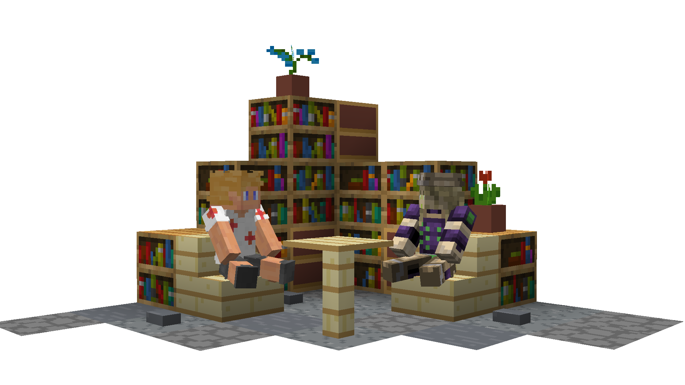

Общайтесь
Объеденяйтесь с другими игроками. Стройте красивые проекты. Проводите ивенты или учавствуйте в них.


Объеденяйтесь с другими игроками. Стройте красивые проекты. Проводите ивенты или учавствуйте в них.
Основное направление - ванильное выживание с дружным комьюнити игроков.
Откройте свой магазин. Продавайте что угодно или обменивайтесь с другими игроками.
Если вы хотите посмотреть как строиться сервер
или же найти место для своего проекта.
Тогда вы можете посмотреть на карту сервера
на одноимённой вкладке сайта.
Если вы устали постоянно заходить в дискорд
чтобы с кем-то пообщаться.
Тогда вам пригодиться Plasmo Voice.
Теперь вы можете общаться с другими игроками сразу в игре.